File: 000540.gt.txt (if the image is defective, simply delete all Arabic text and the line will be excluded)
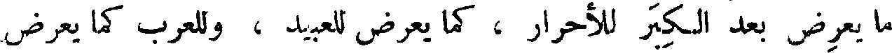
ما يعرض بعد الكبر للأحرار ، كما يعرض للعبيد ، وللعرب كما يعرض
File: 000541.gt.txt (if the image is defective, simply delete all Arabic text and the line will be excluded)
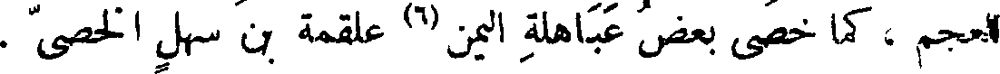
للعجم ، كما خصى بعض عباهلة اليمن(6) علقمة بن سهل الخصي .
File: 000542.gt.txt (if the image is defective, simply delete all Arabic text and the line will be excluded)
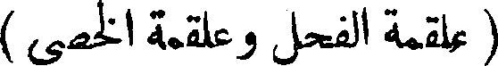
( علقمة الفحل وعلقمة الخصي )
File: 000543.gt.txt (if the image is defective, simply delete all Arabic text and the line will be excluded)
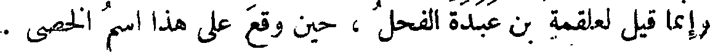
وإنما قيل لعلقمة بن عبدة الفحل ، حين وقع على هذا اسم الخصي .
File: 000544.gt.txt (if the image is defective, simply delete all Arabic text and the line will be excluded)
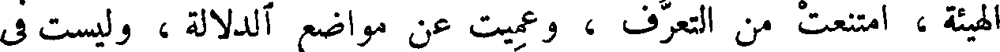
الهيئة ، امتنعت من التعرف ، وعميت عن مواضع الدلالة ، وليست في
File: 000545.gt.txt (if the image is defective, simply delete all Arabic text and the line will be excluded)
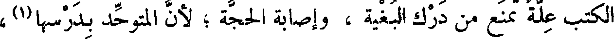
في الكتب علة تمنع من درك البغية ، وإصابة الحجة ؛ لأن المتوحد بدرسها(1) ،
File: 000546.gt.txt (if the image is defective, simply delete all Arabic text and the line will be excluded)
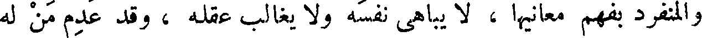
والمنفرد بفهم معانيها ، لا يباهي نفسه ولا يغالب عقله ، وقد عدم من له
File: 000547.gt.txt (if the image is defective, simply delete all Arabic text and the line will be excluded)
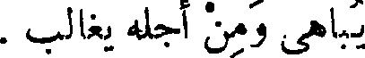
يباهي ومن أجله يغالب .
File: 000548.gt.txt (if the image is defective, simply delete all Arabic text and the line will be excluded)
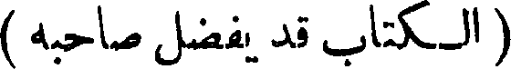
(الكتاب قد يفضل صاحبه )
File: 000549.gt.txt (if the image is defective, simply delete all Arabic text and the line will be excluded)
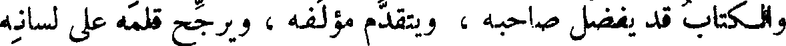
والكتاب قد يفضل صاحبه ، ويتقدم مؤلفه ، ويرجح قلمه على لسانه
File: 000550.gt.txt (if the image is defective, simply delete all Arabic text and the line will be excluded)
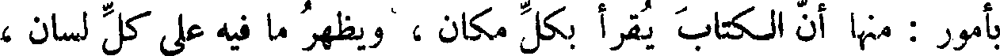
بأمور : منها أن الكتاب يقرأ بكل مكان ، ويظهر ما فيه على كل لسان ،
File: 000551.gt.txt (if the image is defective, simply delete all Arabic text and the line will be excluded)
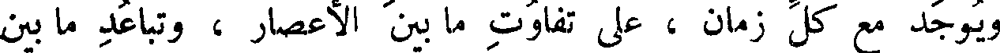
ويوجد مع كل زمان ، على تفاوت ما بين الأعصار ، وتباعد ما بين
File: 000552.gt.txt (if the image is defective, simply delete all Arabic text and the line will be excluded)
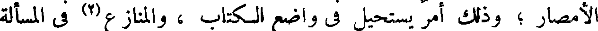
الأمصار ؛ وذلك أمر يستحيل في واضع الكتاب ، والمنازع(2) في المسألة
File: 000553.gt.txt (if the image is defective, simply delete all Arabic text and the line will be excluded)
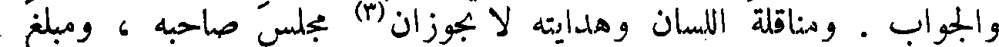
والجواب . ومناقلة اللسان وهدايته لا تجوزان(3) مجلس صاحبه ، ومبلغ
File: 000554.gt.txt (if the image is defective, simply delete all Arabic text and the line will be excluded)
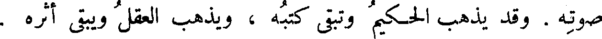
صوته . وقد يذهب الحكيم وتبقى كتبه ، ويذهب العقل ويبقى أثره .
File: 000555.gt.txt (if the image is defective, simply delete all Arabic text and the line will be excluded)
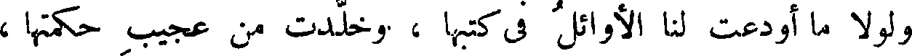
ولولا ما أودعت لنا الأوائل في كتبها ، وخلدت من عجيب حكمتها ،
File: 000556.gt.txt (if the image is defective, simply delete all Arabic text and the line will be excluded)
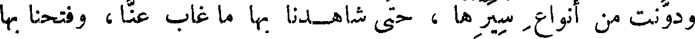
ودونت من أنواع سيرها ، حتى شاهدنا بها ما غاب عنا ، وفتحنا بها
File: 000557.gt.txt (if the image is defective, simply delete all Arabic text and the line will be excluded)
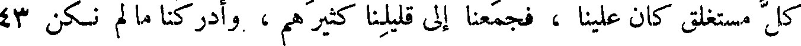
كل مستغلق كان علينا ، فجمعنا إلى قليلنا كثيرهم ، وأدركنا ما لم نكن 43
File: 000558.gt.txt (if the image is defective, simply delete all Arabic text and the line will be excluded)
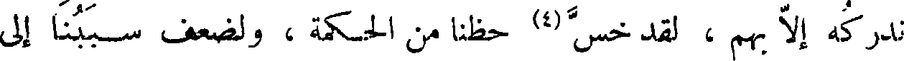
ندركه إلا بهم ، لقد خس(4) حظنا من الحكمة ، ولضعف سببنا إلى
File: 000559.gt.txt (if the image is defective, simply delete all Arabic text and the line will be excluded)
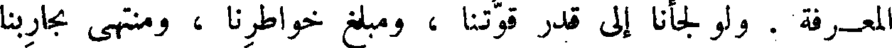
المعرفة . ولو لجأنا إلى قدر قوتنا ، ومبلغ خواطرنا ، ومنتهى تجاربنا
File: 000560.gt.txt (if the image is defective, simply delete all Arabic text and the line will be excluded)
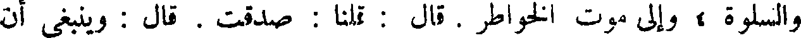
والسلوة . وإلى موت الخواطر . قال : قلنا : صدقت . قال : وينبغي أن
File: 000561.gt.txt (if the image is defective, simply delete all Arabic text and the line will be excluded)
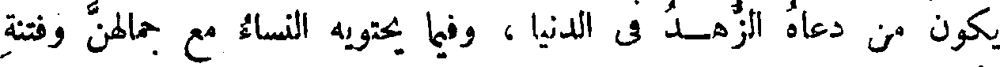
يكون من دعاه الزهد في الدنيا ، وفيما يحتويه النساء مع جمالهن وفتنة
File: 000562.gt.txt (if the image is defective, simply delete all Arabic text and the line will be excluded)
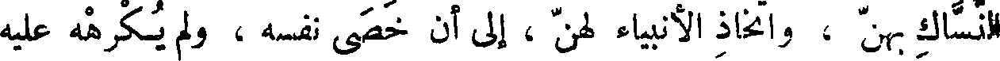
النساك بهن ، واتخاذ الأنبياء لهن ، إلى أن خصى نفسه ، ولم يكرهه عليه
File: 000563.gt.txt (if the image is defective, simply delete all Arabic text and the line will be excluded)
أب ولا عدو ، ولا سباه ساب ، أن يكون مقدار ذلك الزهد هو المقدار الذي
File: 000564.gt.txt (if the image is defective, simply delete all Arabic text and the line will be excluded)
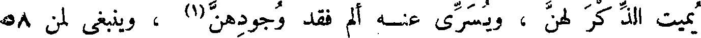
يميت الذ كر لهن ، ويسري عنه ألم فقد وجودهن(1) ، وينبغي لمن 58
File: 000565.gt.txt (if the image is defective, simply delete all Arabic text and the line will be excluded)
كان في إمكانه أن ينشئ العزم(2) ويختار الإرادة التي يصير بها(3) إلى
File: 000566.gt.txt (if the image is defective, simply delete all Arabic text and the line will be excluded)
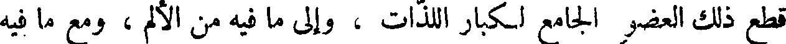
قطع ذلك العضو الجامع لكبار اللذات ، وإلى ما فيه من الألم ، ومع ما فيه
File: 000567.gt.txt (if the image is defective, simply delete all Arabic text and the line will be excluded)
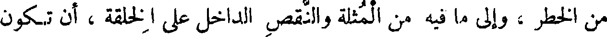
من الخطر ، وإلى ما فيه من المثلة والنقص الداخل على الخلقة ، أن تكون
File: 000568.gt.txt (if the image is defective, simply delete all Arabic text and the line will be excluded)
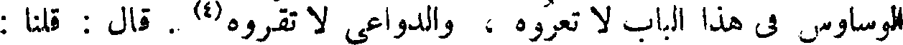
الوساوس في هذا الباب لا تعروه ، والدواعي لا تقروه(4) . قال : قلنا :
File: 000569.gt.txt (if the image is defective, simply delete all Arabic text and the line will be excluded)
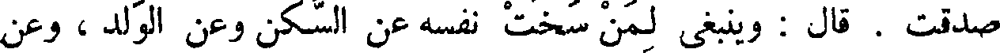
صدقت . قال : وينبغي لمن سخت نفسه عن السكن وعن الولد ، وعن
To Save: `Ctrl+s`, make sure to choose `Webpage, complete`!